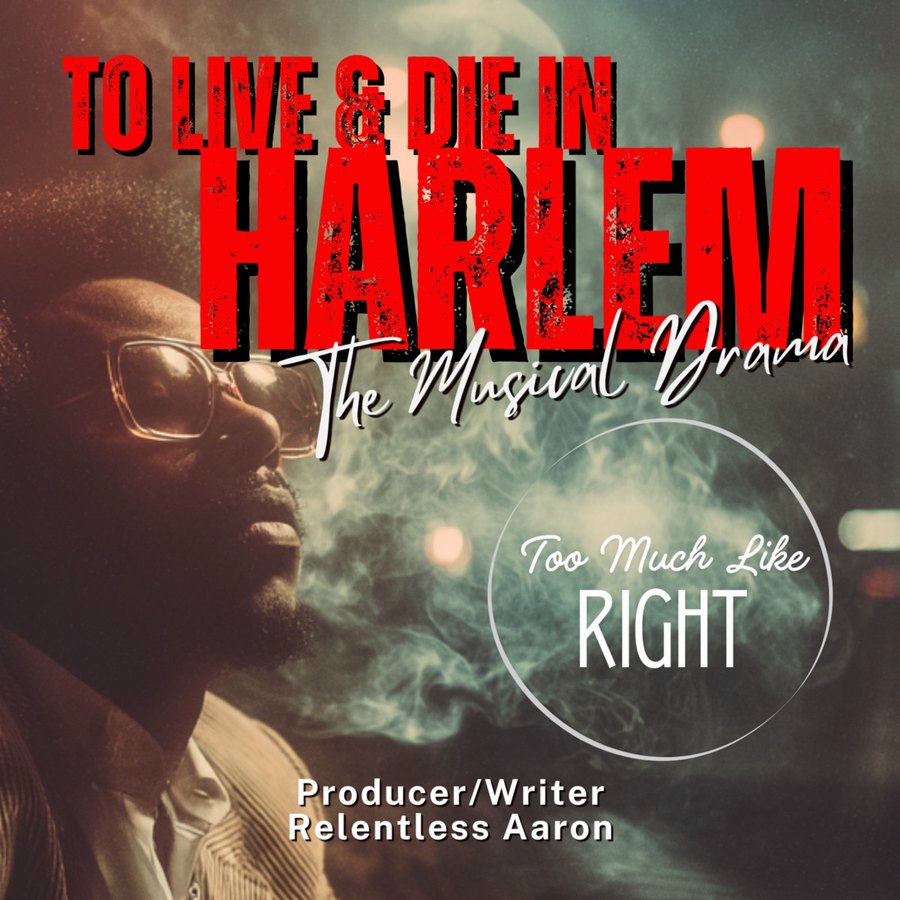

Relentless Library / Musicals / To Live and Die in Harlem, the musical: soundtrack singles only
Relentless Library · Musicals
To Live and Die in Harlem, the musical: soundtrack singles only
Keep this separate from the novel. The musical project of the same name does not have a verified full album. What is live, dated November 13, 2025, are two soundtrack singles: “Too Much Like Right” and “Keep Going Anyway.” That is the whole verified status.

StatusSoundtrack singles only — no full album found
Singles liveTwo, dated November 13, 2025
Not the same asThe 2007 novel
Full musical albumNot found
The two live singles
Too Much Like Right - To Live & Die In Harlem Soundtrack - Single is a two-track Apple Music release (the main title and a choral remix), ID 1852611861: https://music.apple.com/us/album/too-much-like-right-to-live-die-in-harlem-soundtrack-single/1852611861.
Keep Going Anyway - To Live & Die In Harlem Soundtrack - Single is a one-track release, ID 1852612004: https://music.apple.com/us/album/keep-going-anyway-to-live-die-in-harlem-soundtrack-single/1852612004.
The novel is a different object
The novel To Live and Die in Harlem is a St. Martin’s paperback sequel to Push, ISBN 9780312949624, with its own Relentless Library pages. Do not send a reader who wants the book to these singles, and do not file these singles as proof that the novel has a complete musical album.
Questions
Is the musical cancelled?
Unknown. The honest status is: two singles are live; a full album was not found.
Are the Harlem Jazz Essentials albums this musical?
No. Those are separate jazz albums and are not listed here as the musical.